矩阵的几何解释-线性变换#
\(\quad\)在本节我们将介绍矩阵的一种几何理解。先说结论：矩阵代表了一种线性变换，矩阵乘法能将一个向量线性变换为另一个向量。
\(\quad\)线性变换，可理解为函数，它有输入有输出，输入即与矩阵相乘的向量，输出即相乘的结果。假设线性变换为\(T\)，则需满足：
对\(T\)的定义域中一切\(\mathbf{u},\mathbf{v}\)，\(T(\mathbf{u}+\mathbf{v})=T(\mathbf{u})+T(\mathbf{v})\)，即\(A(\mathbf{u}+\mathbf{v})=A\mathbf{u}+A\mathbf{v}\)；
对\(T\)的定义域中一切\(\mathbf{u}\)和数\(c\)，\(T(c\mathbf{u})=cT(\mathbf{u})\)，即\(A(c\mathbf{u})=cA\mathbf{u}\)；
\(\quad\)有一些常见的线性变换是很容易想象的，例如围绕着原点的旋转、翻转等，这些在游戏制作过程中非常常见，只需要借助矩阵相乘即可实现。那么如何确定一个线性变换？我们只需要抓住基变换即可，线性变换由它对空间的基向量的作用完全决定，因为任何的向量都可用基向量线性组合表示。
\(\quad\)举个简单的例子。比如希望能对原空间作一次逆时针旋转90°，如下图所示：
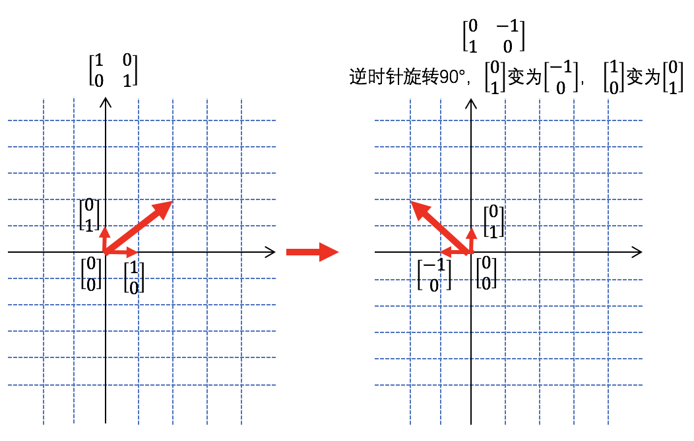
就这样我们得到了一个旋转90°的变换矩阵\(\begin{bmatrix}0 & -1\\1 & 0\end{bmatrix}\)。通过这个矩阵，我们可以计算出任何一个向量在逆时针90°后的形成的新向量，比如\(\begin{bmatrix}2\\2\end{bmatrix}\)：
是不是很简单？不管多么复杂的线性变换（旋转、剪切等），只要记录好变换后的基向量即可，若是逆时针旋转θ呢？如下图所示：
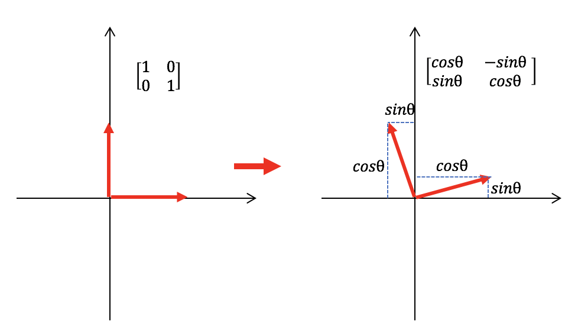
1.1几何解释-矩阵方程与逆矩阵#
\(\quad\)我们可以结合回前面所学的一些知识，试着从几何上去理解。
\(\quad\)比如说解方程\(A\mathbf{x}=\mathbf{b}\)，矩阵\(A\)是一次线性变换，那么我们要解的\(\mathbf{x}\)就是在线性变换后为\(\mathbf{b}\)的向量。比如说解方程\(\begin{bmatrix}0 & -1\\1 & 0\end{bmatrix}\begin{bmatrix}\mathbf{x}_{1}\\
\mathbf{x}_{2}\end{bmatrix} =\begin{bmatrix}-2\\
2\end{bmatrix}\)，我们需要找到与\(A\)相反的线性变换将\(\mathbf{b}\)再线性变换还原为\(\mathbf{x}\)，与\(A\)相反的线性变换就是逆矩阵\(A^{-1}\)。比如\(A\)是逆时针旋转90°，那么\(A^{-1}\)就是顺时针旋转90°：
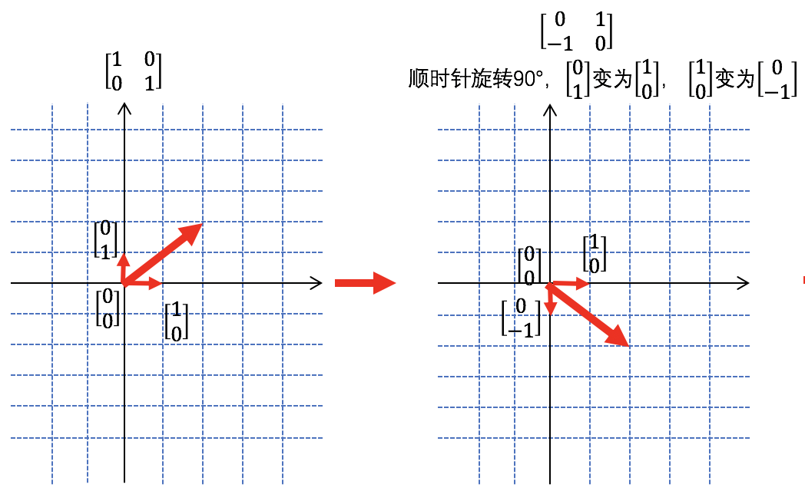
两个矩阵相乘即为两次线性变换，逆时针旋转90°后再顺时针旋转90°，当然是没有变换，\(\begin{bmatrix}0 & -1\\1 & 0\end{bmatrix} \begin{bmatrix}0 & 1\\
-1 & 0\end{bmatrix}=\begin{bmatrix}1 & 0\\
0 & 1\end{bmatrix}\)。
\(\quad\)因此要解出\(\mathbf{x}\)，只需要一次相反的线性变换\(A^{-1}\mathbf{b}=\begin{bmatrix}0 & 1\\-1 & 0\end{bmatrix} \begin{bmatrix}-2\\
2\end{bmatrix}=\begin{bmatrix}2\\
2\end{bmatrix}\)。
\(\quad\)若是方程无解呢？方程无解意味着矩阵\(A\)找不到相反的线性变换，比如说：
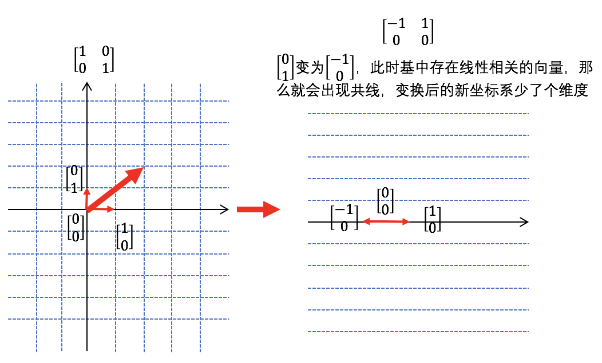
线性变换后空间少了个维度，无法从低维的空间线性变换回高维的空间，故不存在逆矩阵，因此每个线性变换后的向量再也回不去了，方程无解。再推广一下，秩是矩阵列空间的维数，那么从几何上理解，秩就是线性变换后空间的维度，故一个满秩矩阵是可逆的。
1.2应用-图像旋转#
\(\quad\)学习了线性变换后，我们来做点实际小应用，做目标检测的数据增强时，经常地对一张图片做一次旋转、翻转等，但是图片的改变导致目标输出值的坐标点也随之改变，这时我们得去计算某个坐标随着图片旋转或翻转后的新坐标。
\(\quad\)图片的坐标以左上角作为原点，如下图所示，图中的红点就是我们要计算的坐标：
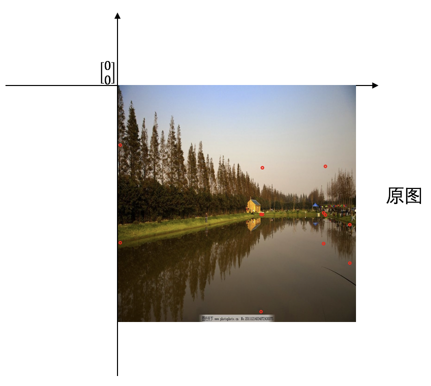
\(\quad\)对图片的翻转用OpenCV很容易实现，但是图中红点变换后的坐标需要我们自己的去计算。举例对图片逆时针旋转90°，计算点(x,y)在翻转后的位置，分成两步：
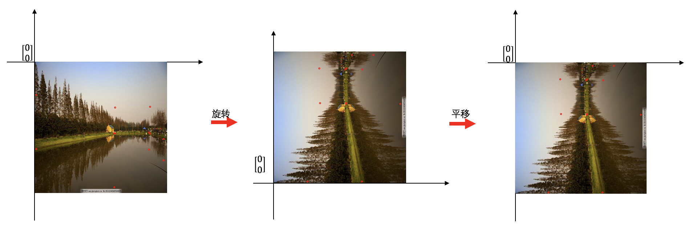
\(\quad\)第一步，旋转，即通过矩阵相乘即可，逆时针旋转90°的基为\(\begin{bmatrix}0 & -1\\1 & 0\end{bmatrix}\)，因此坐标(x,y)变换后为\(\begin{bmatrix}0 & -1\\1 & 0\end{bmatrix}\begin{bmatrix}x\\
y\end{bmatrix}=\begin{bmatrix}-y\\
x\end{bmatrix}\).
\(\quad\)第二步，平移，观察可知，图片平旋转后需要向下平移图片的宽度width的大小才可让左上角回到原点，故有\(\begin{bmatrix}-y\\x-width\end{bmatrix}\)，最后取绝对值即可完成：
一条简单的公式即可完成计算。代码如下：
def img_rotate_90(img, landmark):
# 获取图像尺寸
height, width = img.shape[0], img.shape[1]
# 若未指定旋转中心，则将图像中心设为旋转中心
center = (width / 2, height / 2)
# 执行旋转
M = cv2.getRotationMatrix2D(center, 90, 1)
rotate_img = cv2.warpAffine(img, M, (width, height))
# 计算landmark在旋转后的坐标
rotated_landmark = [i for i in landmark]
for i in range(0, len(landmark), 2):
# landmark为每个待计算的坐标点，例如[x,y,x1,y1,...,xn,yn]，两个两个出现
rotated_landmark[i], rotated_landmark[i+1] = landmark[i+1], -landmark[i]+width
return rotate_img, rotated_landmark
1.3非方阵的情况#
\(\quad\)我们讨论的都是方阵，但是如果是非方阵呢？给定一个矩阵\(m\times n\)，当这个矩阵与\(n\)维向量做乘法时，表示将该向量从\(n\)维空间映射\(m\)维空间。下面分别讨论当\(n>m\)或\(m>n\)的情况。
\(\quad\)当一个矩阵\(n>m\)时，例如\(\begin{bmatrix}1 & 0 & -2\\-1 & 2 & -5\end{bmatrix}\)，列空间的维数为3，拥有三个基向量，如下图所示：
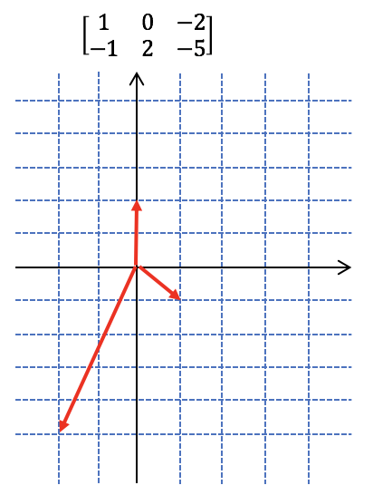
当它与一个三维向量做矩阵乘法时，会得到一个二维向量，相当于是做了一次降维，将三维向量投影到二维上、将空间上的一个向量投影到这三个向量所在的平面上，例如：
特别地，如果是一维的情况，例如\(\begin{bmatrix}1 & -5\end{bmatrix}\)，就相当于是一条直线上的两个点，如图：
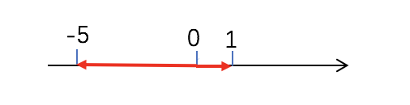
通过矩阵相乘来做降维是机器学习中常用的手法，例如主成分分析法。
\(\quad\)当一个矩阵\(m>n\)时，例如\(\begin{bmatrix}1 & 2\\0 & -4\\3 & -1\end{bmatrix}\)，从几何上理解，即从三维空间取两个向量构成了一个平面，该平面与平面中的一个向量做乘法得到一个三维的向量，相当于是做了升维，将平面中的的向量投影到空间中，例如：
\(\quad\)从矩阵方程\(A\mathbf{x}=\mathbf{b}\)的角度，若\(n>m\)，未知量数目大于方程数，方程要从一个低维的向量逆变换为一个高维的向量，要么无解，要么无穷多解；若\(m>n\)，方程数大于未知量数，方程要从一个高维向量逆变换回一个低维向量，要么无解，要么一个解。
坐标系#
\(\quad\)在本节我们将介绍矩阵的另一种几何理解。先说结论：将矩阵乘法看成是一个函数，它的输入是一个视角下的坐标，输出是另一个视角下的坐标。
\(\quad\)对于一个向量空间\(V\)，明确指定一个基\(\cal{B}\)的一个重要原因是在\(V\)上强加一个坐标系。
\(\quad\)一个向量的在不同的坐标系下有不同的坐标，描述一个坐标系最好的手段就是基。我们以\(\Bbb{R}^{2}\)为例，基\(\begin{bmatrix}1 & 0\\ 0 & 1\end{bmatrix}\),\(\begin{bmatrix}2 & 0\\ 0 & 2\end{bmatrix}\),\(\begin{bmatrix}2 & -2\\ 0 & 2\end{bmatrix}\)，它们所表示的坐标系分别如下图所示，为了便于观察基向量的位置，图中还保留了横轴与竖轴，希望大家在看图的同时把它想象成是一个动图（坐标系在伸缩旋转）：
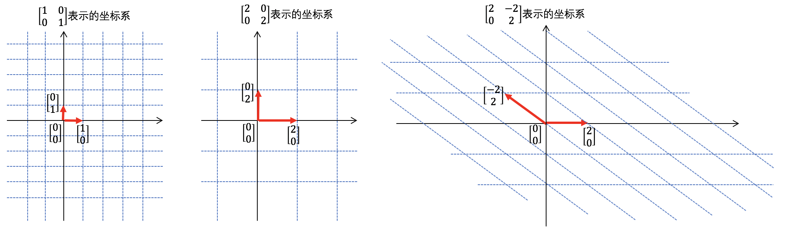
基\(\begin{bmatrix}1 & 0\\ 0 & 1\end{bmatrix}\)表示的坐标系就是我们平日里用得最多的，一般向量都是默认为是在该坐标系下。
\(\quad\)假设\(\cal{B}=\{\mathbf{b}_{1},\cdots,\mathbf{b}_{n}\}\)是\(V\)的一个基，\(\mathbf{x}\)在\(V\)中，\(\mathbf{x}\)相对于基\(\cal{B}\)的坐标是使得\(\mathbf{x}=c_{1}\mathbf{b}_{1}+\cdots+c_{n}\mathbf{b}_{n}=[\mathbf{b}_{1} \cdots \mathbf{b}_{n}]\begin{bmatrix}c_{1}\\\vdots\\c_{n}\end{bmatrix}\)的权\(c_{1},\cdots,c_{n}\)，故\(\Bbb{R}^{n}\)中的向量：
是\(\mathbf{x}\)的\(\cal{B}\)坐标向量，\(\mathbf{x}\mapsto [\mathbf{x}]_{\cal{B}}\)称之为坐标映射。
\(\quad\)从几何上解释，虽然是同一个向量，但是在不同的坐标系下所观察的“视角”不同，因而有不同的坐标。因为不同的基要去表示同一个向量所需的基向量的伸缩都是不同的。我们以向量\(\begin{bmatrix}2\\2\end{bmatrix}\)为例，观察它在不同的坐标系下的差异。
\(\quad\)首先是我们的视角下观察：
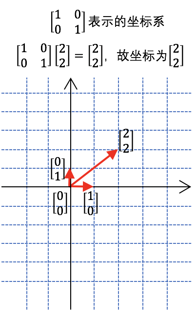
接着是\(\begin{bmatrix}2 & 0\\ 0 & 2\end{bmatrix}\):
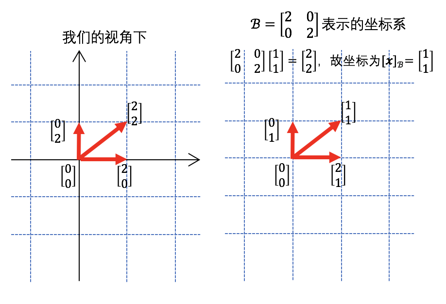
接着是\(\begin{bmatrix}2 & -2\\ 0 & 2\end{bmatrix}\):
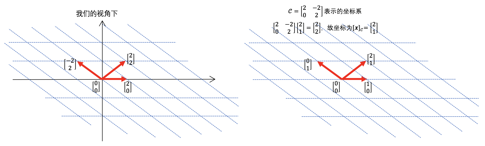
\(\quad\)通过上述例子，我们可以得到关于\([\mathbf{x}]_{\cal{B}},\cal{B}=\{\mathbf{b}_{1},\cdots,\mathbf{b}_{n}\},\mathbf{x}\)三者的关系，令\(P_{\cal{B}}=[\mathbf{b}_{1} \cdots \mathbf{b}_{n}]\)，我们可以写成：
式子说明，将矩阵乘法看成是一个函数，它的输入矩阵代表的坐标系下的坐标，输出是我们的视角下的坐标；逆矩阵则相反。同样的向量，在不同的坐标系下具有不同的坐标，而矩阵相乘，就是将不同视角之间的坐标转换的函数。
\(\quad\)也许你会问，知道了这个可以干嘛？明白线代的几何意义会帮助我们更好地学习线代的概念，比如说矩阵相似，为何这样的等式下的两个矩阵我们称之为相似？结合本节的内容与线性变换的知识就可以很好地理解，具体阅读矩阵相似.
特征值和特征向量#
\(\quad\)假设\(A\)为\(n\times n\)矩阵，\(\mathbf{x}\)为非零向量，若存在数\(\lambda\)使\(A\mathbf{x}=\lambda \mathbf{x}\)有非平凡解\(\mathbf{x}\)，则称\(\lambda\)为\(A\)的特征值（可以为零），\(\mathbf{x}\)称为对应于\(\lambda\)的特征向量（非零）。
\(\quad\)若\(\lambda\)为矩阵\(A\)的特征值，那么方程：
中所有解的集合（\(A-\lambda I\)的零空间）称为\(A\)的对应于\(\lambda\)的特征空间。
\(\quad\)直观地，设\(A=\begin{bmatrix}1 & 6\\5 & 2\end{bmatrix}\),\(\mathbf{u}=\begin{bmatrix}6\\-5\end{bmatrix} \),\(\mathbf{v}=\begin{bmatrix}3\\-2\end{bmatrix}\)，计算有：
因此\(\mathbf{u}\)是特征值-4对应的特征向量，但\(\mathbf{v}\)不是\(A\)的特征向量。
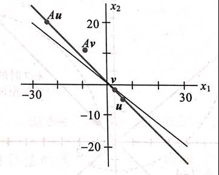
\(\quad\)我们考虑特征值为零的情况，当矩阵\(A\)有零特征值时，方程：
有非平凡解，说明矩阵\(A\)不可逆，因此可以下一个结论：0是矩阵\(A\)的特征值当且仅当\(A\)不可逆。
1.特征方程求特征根#
\(\quad\)给定一个\(n\times n\)的矩阵\(A\)，如何求特征值和对应的特征向量？
\(\quad\)特征值\(\lambda\)需满足方程\(A\mathbf{x}=\lambda \mathbf{x}\)中的\(\mathbf{x}\)有解存在，也即方程：
有非零解存在，根据可逆矩阵定理，若矩阵\(A-\lambda I\)线性无关，则方程只有零解，因此要使方程有解，矩阵\(A-\lambda I\)不可逆，也即行列式\(|A-\lambda I|\)等于0。
\(\quad\)引出定理：数\(\lambda\)是\(n\times n\)矩阵\(A\)的特征值的充要条件为\(\lambda\)是特征方程\(|A-\lambda I|=0\)的根。
\(\quad\)举例如下：
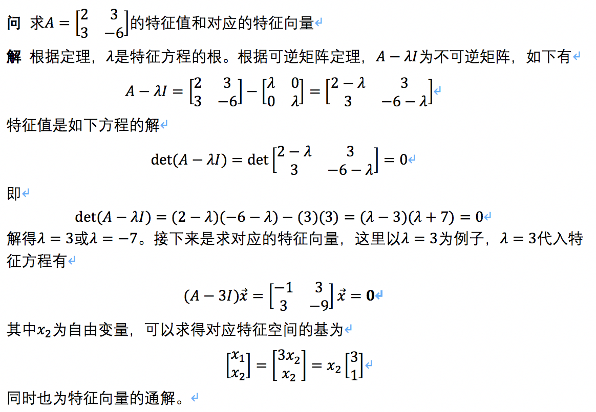
可以发现特征方程\(|A-\lambda I|=0\)是关于\(\lambda\)的的多项式，也称之为\(\lambda\)的特征多项式。
\(\quad\)还可以应用QR分解来求矩阵的特征值。
2.应用#
\(\quad\)下面通过一个例子来说明特征值和特征向量的作用：
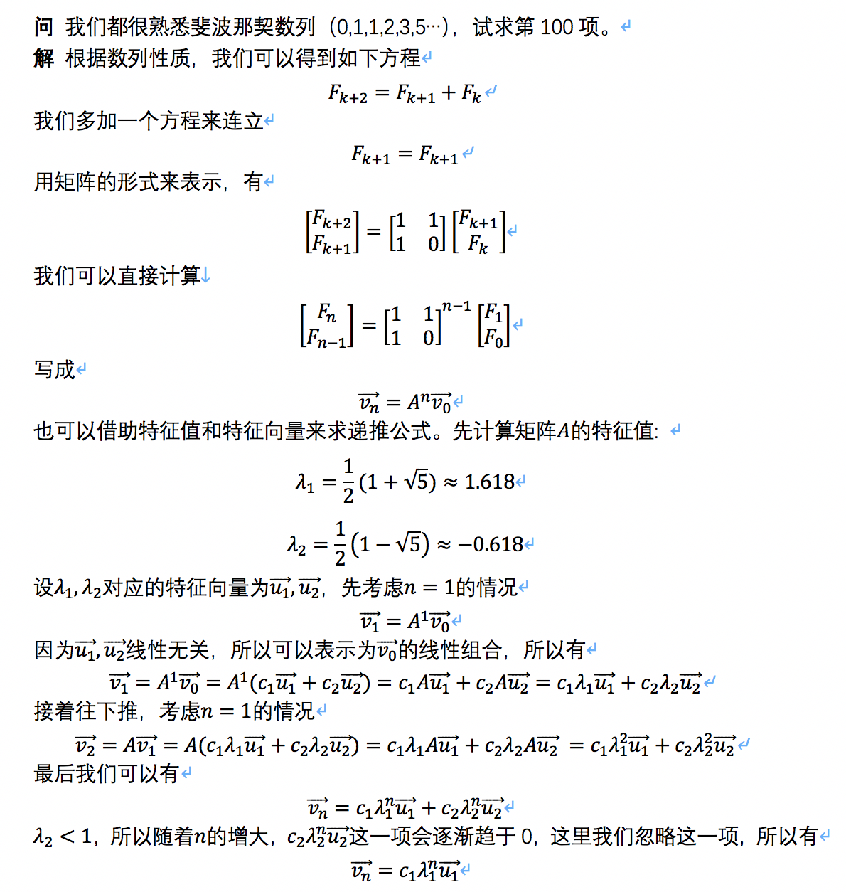
3.几何意义#
\(\quad\)矩阵是一次线性变换，那么特征向量就是在线性变换前后、只做了伸缩未改变方向的向量，而特征值就是伸缩的比例，当特征值为负表明特征向量被反向拉伸。
1.矩阵相似与对角化#
\(\quad\)假设\(A,B\)是\(n\times n\)矩阵，如果存在可逆矩阵\(P\)使得\(P^{-1}AP=B\)，或等价地\(A=PBP^{-1}\)，则称\(A\)相似于\(B\)。把\(A\)变成\(P^{-1}AP\)的变换称为相似变换。
\(\quad\)若\(n\times n\)矩阵\(A,B\)是相似的，那么它们有相同的特征多项式，从而有相同的特征值。
\(\quad\)结合回线性变换和坐标系的内容，我们来思索为什么\(P^{-1}AP=B\)称\(A,B\)相似。
\(\quad\)我们知道矩阵可以代表一种线性变换，也能代表一个坐标系。在我们的视角下作一次线性变换很简单，只需要记录基向量变换后的位置即可，例如下图所示做了一次逆时针旋转90°：
但是如果是在别的视角下的呢？我们希望在\(\begin{bmatrix}2 & -2\\ 0 & 2\end{bmatrix}\)的视角下做逆时针旋转90°，如下图所示：
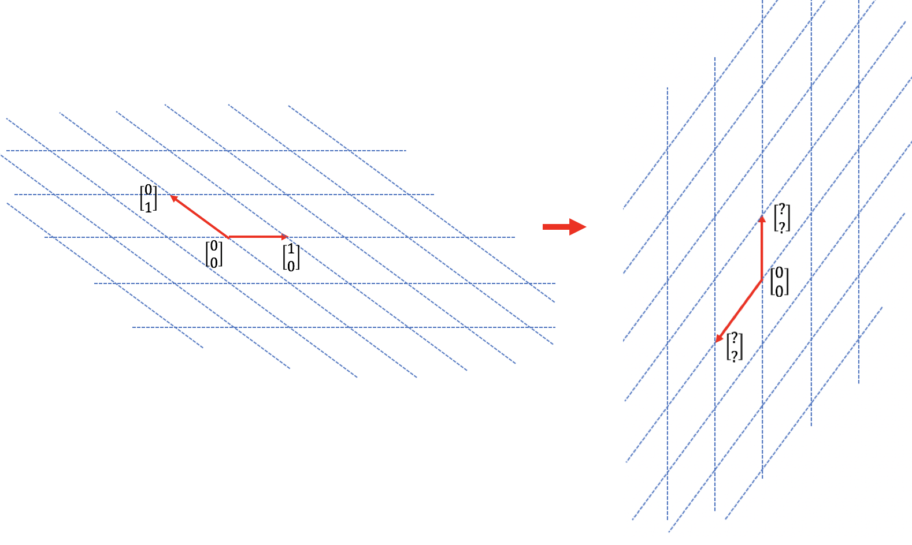
做法和之前线性变换是相同的，只是我们很难从\(\begin{bmatrix}2 & -2\\ 0 & 2\end{bmatrix}\)的视角下去观察逆时针旋转90°后所处的坐标，我们需要通过矩阵相乘转换成我们的视角下。
\(\quad\)比如\(\begin{bmatrix}2 & -2\\ 0 & 2\end{bmatrix}\)视角下有个向量\(\begin{bmatrix}x\\y\end{bmatrix}\)，我们希望得到它经过逆时针90°旋转后的坐标。先将其转换成我们的视角下：
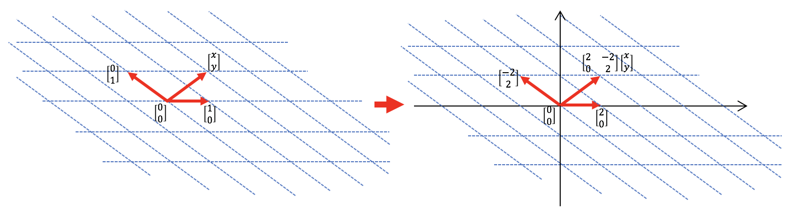
接着在我们的视角下作一次逆时针旋转90°：
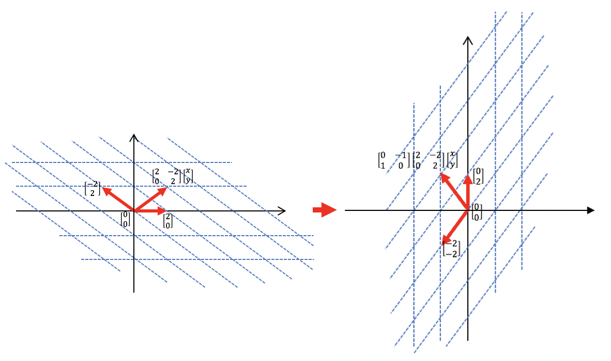
最后是乘以逆矩阵还原回原来的视角：
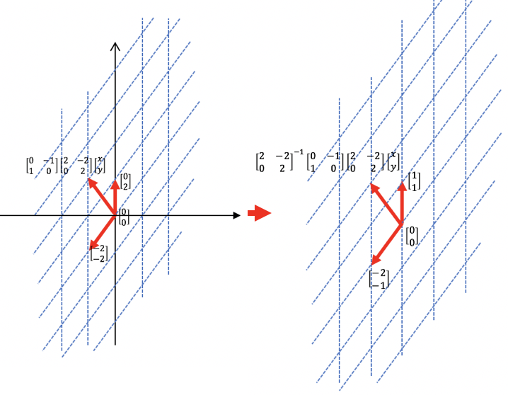
\(\quad\)由此可以看出\(A=\begin{bmatrix}2 & -2\\ 0 & 2\end{bmatrix}^{-1}\begin{bmatrix}0 & -1\\
1 & 0
\end{bmatrix}\begin{bmatrix}2 & -2\\
0 & 2
\end{bmatrix}\)其实就是在\(\begin{bmatrix}2 & -2\\ 0 & 2\end{bmatrix}\)的视角下做\(\begin{bmatrix}0 & -1\\1 & 0\end{bmatrix}\)变换，故\(A\)与\(B=\begin{bmatrix}0 & -1\\1 & 0\end{bmatrix}\)可以说是相似的，因为他们都其实是逆时针旋转90°，只是一个在我们的视角下，一个是在\(\begin{bmatrix}2 & -2\\ 0 & 2\end{bmatrix}\)的视角下。
\(\quad\)这也能解释为什么相似矩阵具有相同的特征值，因为本质上都是同一种变换。
2.对角化#
\(\quad\)如果方阵\(A\)相似于对角矩阵，即存在可逆矩阵\(P\)和对角矩阵\(D\)，有\(A=PDP^{-1}\)，则称\(A\)可对角化。
\(\quad\)对角化定理：\(n\times n\)矩阵\(A\)可对角化的充要条件是\(A\)有\(n\)个线性无关的特征向量，这\(n\)个特征向量我们称之为特征向量基。若\(A\)可对角化，则\(P\)的列向量是\(A\)的\(n\)个线性无关的特征向量，此时\(D\)的主对角线上元素是\(A\)的对应于\(P\)中特征向量的特征值，证：
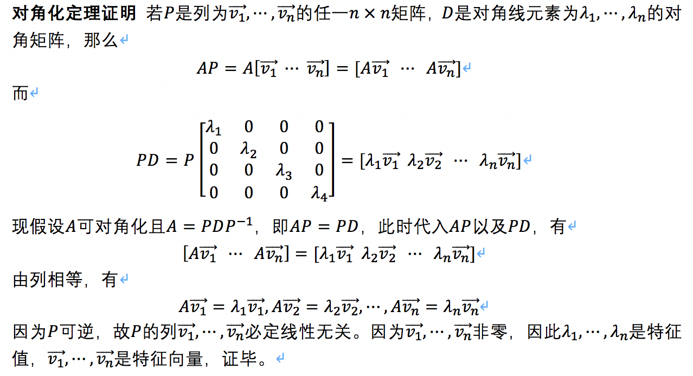
2.1矩阵对角化流程#
\(\quad\)下面通过一个例子来说明如何对一个矩阵对角化。流程如下：
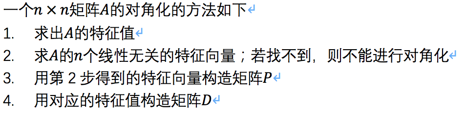
例如：
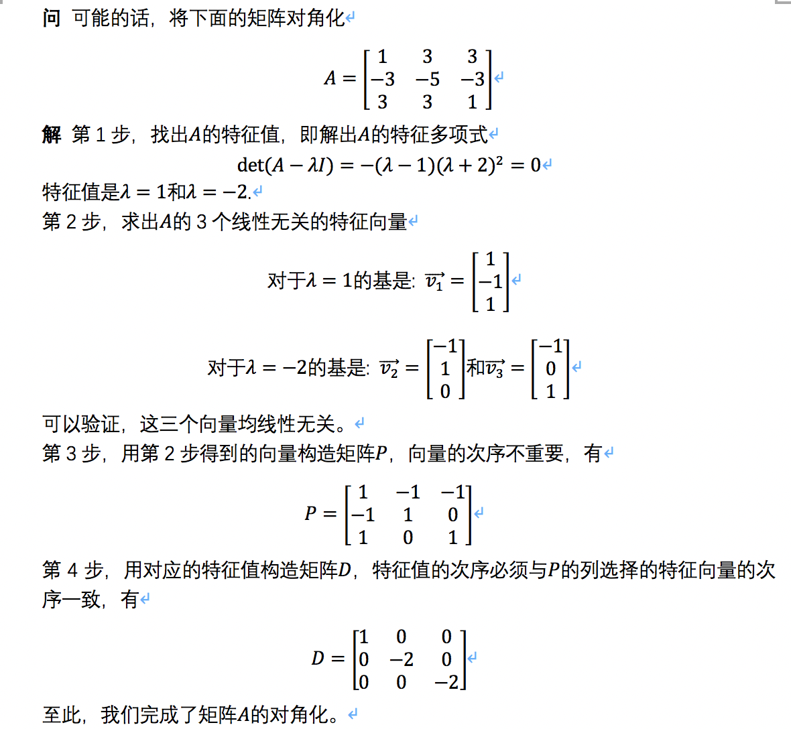
2.2矩阵对角化与幂#
\(\quad\)矩阵对角化相当于是矩阵分解，它最大的作用是求矩阵的幂运算。推导：
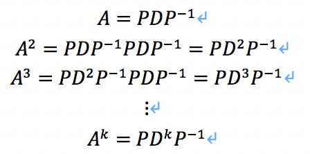
而对角矩阵的幂运算又非常简单，例如：
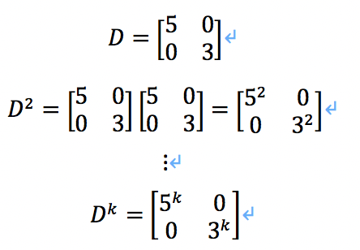
1.内积与范数#
\(\quad\)假设\(\mathbf{u},\mathbf{v}\)是\(\Bbb{R}^{n}\)中的向量，则称\(\mathbf{u}\cdot \mathbf{v}\)为\(\mathbf{u}\)和\(\mathbf{v}\)的内积，计算如下：
\(\quad\)内积具有如下性质，其中\(\mathbf{u},\mathbf{v},\mathbf{w}\)是\(\Bbb{R}^{n}\)中的向量，\(c\)是一个数：
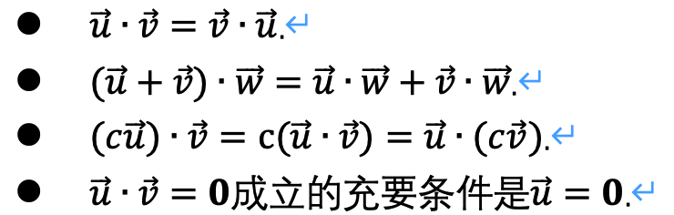
1.1内积的几何表示#
\(\quad\)内积也可以写成如下形式，其中\(\theta\)为\(\mathbf{u},\mathbf{v}\)向量之间的夹角：\(\mathbf{u}\cdot \mathbf{v}=\Vert\mathbf{u}\Vert\Vert\mathbf{v}\Vert cos\theta\)。 这也是内积的几何意义，即\(\mathbf{u}\)投影到\(\mathbf{v}\)的长度乘以\(\mathbf{v}\)的长度：
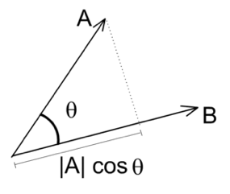
2.范数#
\(\quad\)各种范数如下：
向量的0-范数：向量的非零元素个数，记作\(\Vert\mathbf{x}\Vert_{0}\)，可理解为\(\mathbf{x}\)到原点的汉明距离。
向量的1-范数：向量的元素绝对值之和，记作\(\Vert\mathbf{x}\Vert_{1}=\sum_{i=1}^n|x_{i}|\)，可理解为\(\mathbf{x}\)到原点的曼哈顿距离。
向量的2-范数（向量的长度/范数）：向量的元素平方和再开方，恰好为与自身的内积再开方，即\(\Vert\mathbf{x}\Vert=\sqrt{\mathbf{x}\cdot\mathbf{x}}=\sqrt{x_{1}^{2}+\cdots+x_{n}^{2}}\)，\(\Vert\mathbf{x}\Vert^{2}=\mathbf{x}\cdot\mathbf{x}\)，可理解为\(\mathbf{x}\)到原点的欧式距离。
向量的p-范数：向量元素绝对值的p次方和的1/p次幂，记作\(\Vert\mathbf{x}\Vert_{p}=(\sum_{i=1}^n|x_{i}|^{p})^{\frac{1}{p}}\)
矩阵的1-范数：返回矩阵的每个列向量的1-范数中的最大值。
矩阵的2-范数：\(\Vert X\Vert_{2}=\sqrt{\lambda_{1}}\)，其中\(\lambda_{1}\)为\(X^{T}X\)的最大特征值。
\(\quad\)对任意数\(c\)，向量\(c\mathbf{x}\)的长度等于\(\Vert c\mathbf{x}\Vert=|c|\Vert\mathbf{x}\Vert\)。
\(\quad\)长度为1的向量我们称之为单位向量，单位化是指将向量\(\mathbf{u}\)化为单位向量\(\mathbf{v}\)的过程，即\(\mathbf{v}=\mathbf{u}/\Vert\mathbf{u}\Vert\)，其中\(\mathbf{u},\mathbf{v}\)方向一致。
\(\quad\)两个向量之间的距离：\(\Bbb{R}^{n}\)中两个向量\(\mathbf{u},\mathbf{v}\)之间的距离记作\(dist(\mathbf{u},\mathbf{v})\)，表示向量\(\mathbf{u}-\mathbf{v}\)的长度，即\(dist(\mathbf{u},\mathbf{v})=\Vert\mathbf{u}-\mathbf{v}\Vert\)；可推广计算：
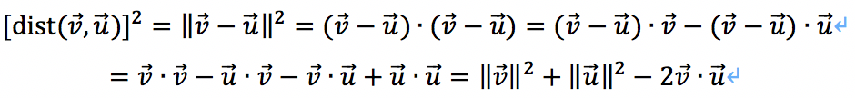
即满足平方差定理。
1.正交#
\(\quad\)考虑\(\Bbb{R}^{2}\)或\(\Bbb{R}^{3}\)中通过原点且由向量\(\mathbf{u},\mathbf{v}\)确定的两条直线，两条直线几何上垂直当且仅当\(dist(\mathbf{u},\mathbf{v})=dist(\mathbf{u},-\mathbf{v})\)，如下图所示：
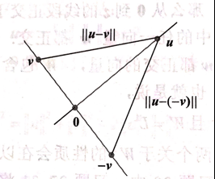
推导得：
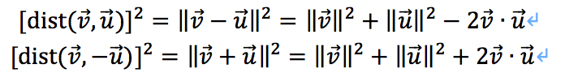
得出结论：\(\Bbb{R}^{n}\)中两个向量\(\mathbf{u},\mathbf{v}\)相互正交（垂直）的充要条件是\(\mathbf{u}\cdot\mathbf{v}=0\)。零向量与任何向量都正交。
\(\quad\)勾股定理：两个向量正交的充要条件是\(\Vert\mathbf{u}+\mathbf{v}\Vert^{2}=\Vert\mathbf{u}\Vert^{2}+\Vert\mathbf{v}\Vert^{2}\)，如下图所示：
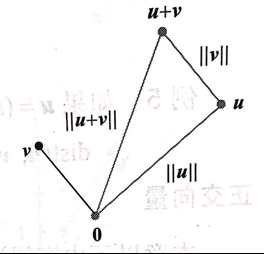
1.1正交补#
\(\quad\)如果向量\(\mathbf{z}\)与\(\Bbb{R}^{n}\)的子空间\(W\)中的任意向量都正交，则称\(\mathbf{z}\)正交于\(W\)；与\(W\)正交的全体向量的集合称为\(W\)的正交补\(W^{\bot}\)。向量\(\mathbf{x}\)属于\(W^{\bot}\)的充要条件是向量\(\mathbf{x}\)与生成空间\(W\)的任一向量正交。
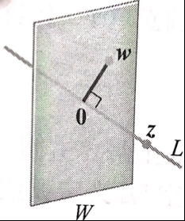
\(\quad\)假设\(A\)是\(m\times n\)矩阵，那么\(A\)的行空间的正交补是\(A\)的零空间，且\(A\)的列空间的正交补是\(A^{T}\)的零空间（因为零空间的每个向量与\(A\)的每个行向量正交）：
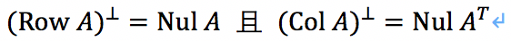
1.2正交基#
\(\quad\)正交集：如果\(\Bbb{R}^{n}\)中的向量集合\(\{\mathbf{u}_{1},\cdots,\mathbf{u}_{n}\}\)中任意两个不同向量都正交，则被称之为正交集。
\(\quad\)正交基：如果\(S=\{\mathbf{u}_{1},\cdots,\mathbf{u}_{n}\}\)是由\(\Bbb{R}^{n}\)中非零向量构成的正交集，那么\(S\)是线性无关集，因此构成\(S\)所生成的一组正交基。
\(\quad\)单位正交集：由单位向量构成的正交集集合\(\{\mathbf{u}_{1},\cdots,\mathbf{u}_{p}\}\)称之为单位正交集。如果\(W\)是一个由单位正交集生成的子空间，那么\(\{\mathbf{u}_{1},\cdots,\mathbf{u}_{p}\}\)是\(W\)的单位正交基或标准正交基。
\(\quad\)正交基相较于其他基更有优越性，更易计算线性组合中的权。
\(\quad\)假设\(\{\mathbf{u}_{1},\cdots,\mathbf{u}_{p}\}\)是\(\Bbb{R}^{n}\)中子空间\(W\)的正交基，对\(W\)中的每个向量\(\mathbf{y}\)，线性组合：
$\(\mathbf{y}=c_{1}\mathbf{u}_{1}+\cdots+c_{p}\mathbf{u}_{p}\)\(
中的权可以由\)c_{j}=\frac{\mathbf{y}\cdot\mathbf{u}{j}}{\mathbf{u}{j}\cdot\mathbf{u}_{j}}(j=1,\cdots,p)\(计算，所以有：
\)\(\mathbf{y}=\frac{\mathbf{y}\cdot\mathbf{u}_{1}}{\mathbf{u}_{1}\cdot\mathbf{u}_{1}}\mathbf{u}_{1}+\cdots+\frac{\mathbf{y}\cdot\mathbf{u}_{p}}{\mathbf{u}_{p}\cdot\mathbf{u}_{p}}\mathbf{u}_{p}\)\(
\)\quad$证明如下：
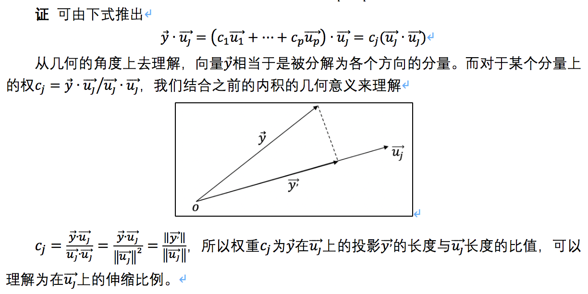
1.正交分解定理#
\(\quad\)若\(W\)是\(\Bbb{R}^{n}\)的一个子空间，那么\(\Bbb{R}^{n}\)中的每一个向量\(\mathbf{y}\)可以唯一地表示为：
其中\(\hat{\mathbf{y}}\)属于\(W\)而\(\mathbf{z}\)属于\(W^{\bot}\)，实际上，如果\(\{\mathbf{u}_{1},\cdots,\mathbf{u}_{p}\}\)是\(W\)的任意正交基，那么：
且\(\mathbf{z}=\mathbf{y}-\hat{\mathbf{y}}\)。\(\hat{\mathbf{y}}\)称为\(\mathbf{y}\)在\(W\)上的正交投影，记作\(proj_{W}\mathbf{y}\)，如下图所示：
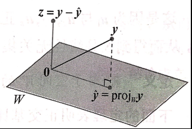
\(\quad\)例如：
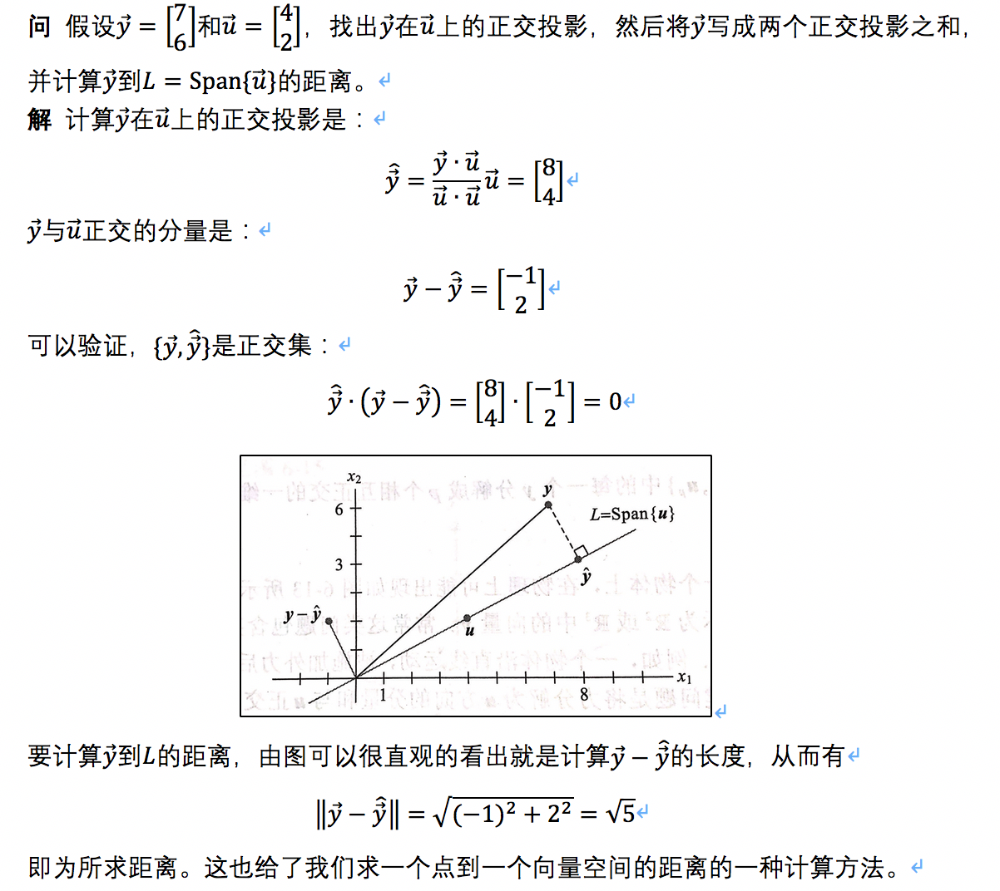
2.最佳逼近定理#
\(\quad\)假设\(W\)是\(\Bbb{R}^{n}\)的一个子空间，\(\mathbf{y}\)是\(\Bbb{R}^{n}\)中的任意向量，\(\hat{\mathbf{y}}\)是\(\mathbf{y}\)在\(W\)上的正交投影，那么\(\hat{\mathbf{y}}\)是\(W\)中最接近\(\mathbf{y}\)的点，也就是：
对所有属于\(W\)又异于\(\hat{\mathbf{y}}\)的\(\mathbf{v}\)成立。可理解为向量\(\hat{\mathbf{y}}\)为\(W\)中元素对\(\mathbf{y}\)的最佳逼近。
正交矩阵#
\(\quad\)各列构成单位正交集的矩阵在应用和用矩阵计算的计算机算法中都非常重要，这样的矩阵我们也称之为正交矩阵。
\(\quad\)定理：一个\(m\times n\)矩阵\(U\)具有单位正交列向量的充要条件是\(U^{T}U=I\)。证明如下：
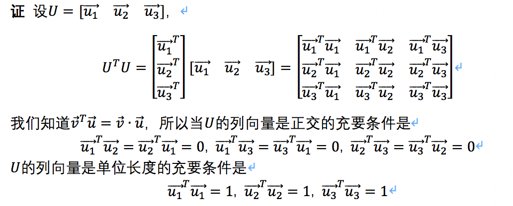
易知，如果一个正交矩阵\(U\)可逆（具有单位正交列的方阵），则它的逆矩阵为\(U^{T}\)，例如： $\(U=\begin{bmatrix} 0 & 1 & 0\\ 1 & 0 & 0\\ 0 & 0 & 1 \end{bmatrix} , U^{T}= \begin{bmatrix} 0 & 1 & 0\\ 0 & 0 & 1\\ 1 & 0 & 0 \end{bmatrix} \)\( \)\quad\(**定理**：如果\){\mathbf{u}{1},\cdots,\mathbf{u}{p}}\(是\)\Bbb{R}_{n}\(中子空间\)W$的单位正交基，那么：
如果\(U=[\mathbf{u}_{1} \cdots \mathbf{u}_{p}]\)，则：
\(\quad\)该定理说明了一个空间的单位正交基的优越性，可以很简单地表达出任意向量在该空间的正交投影。
格拉姆-施密特方法#
\(\quad\)我们说明了正交矩阵、单位正交基的种种好处，而格拉姆-施密特方法是对 \(\Bbb{R}_{n}\) 中任何非零子空间构造正交基或标准正交基的简单算法，该算法基于正交分解定理，逐个使基向量\(\mathbf{x}_{k}\)分解为正交于前\(k\)个基向量的向量。对\(\Bbb{R}^{n}\)的子空间\(W\)的一个基\(\{\mathbf{x}_{1},\cdots,\mathbf{x}_{p}\}\)，其中 \(proj_{W_{k}}\mathbf{x}_{k+1}\) 表示\(\mathbf{x}_{k+1}\)在\(Span\{\mathbf{x}_{1},\cdots,\mathbf{x}_{k}\}\)的正交投影，算法过程为：
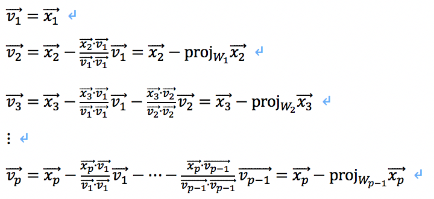
\(\quad\)那么得到的向量集合\(\{\mathbf{v}_{1},\cdots,\mathbf{v}_{p}\}\)是\(W\)的一个正交基，此外\(Span\{\mathbf{v}_{1},\cdots,\mathbf{v}_{k}\}=Span\{\mathbf{x}_{1},\cdots,\mathbf{x}_{k}\}\),其中\(1\leq k\leq p\)。举一个简单的小例子：
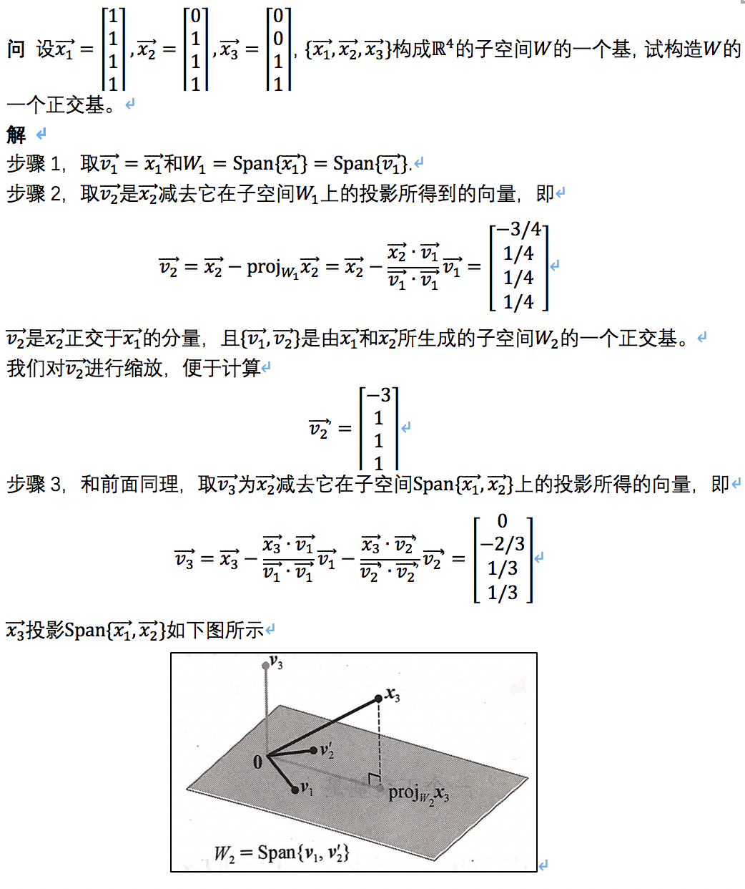
LU分解#
\(\quad\)分解要求：矩阵各列线性无关。
1.介绍#
\(\quad\)矩阵的因式分解是把A表示为两个或更多矩阵的乘积，矩阵乘法是数据的综合（把两个或更多线性变换的作用结合成一个矩阵），矩阵的因式分解是数据的分解，把数据组成两个或者更多，这种结构可能更有用，或者更便于计算。
\(\quad\)在工业与商业问题中，\(LU\)分解是常见的一种矩阵因式分解算法，用途在于解一系列具有相同系数矩阵中的线性方程：
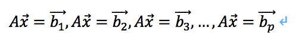
\(\quad\)我们假设\(m\times n\)矩阵\(A\)可以行化简为阶梯型矩阵而不必进行行变换（可对比\(LUP\)分解），则\(A\)可以写成形式\(A=LU\)，\(L\)是\(m\times n\)下三角矩阵（可逆），主对角线元素全是1；\(U\)是\(A\)的一个等价的\(m\times n\)阶梯型矩阵，如下图所示：
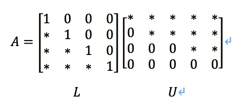
\(\quad\)通过\(LU\)分解求解\(A\mathbf{x}=\mathbf{b}\)可以写成\(LU\mathbf{x}=\mathbf{b}\)，可变换成解下列方程来求解\(\mathbf{x}\)：
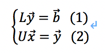
先解(1)再(2)，因为\(L,U\)都是三角矩阵，因此很容易计算。
\(\quad\)举一个例子：
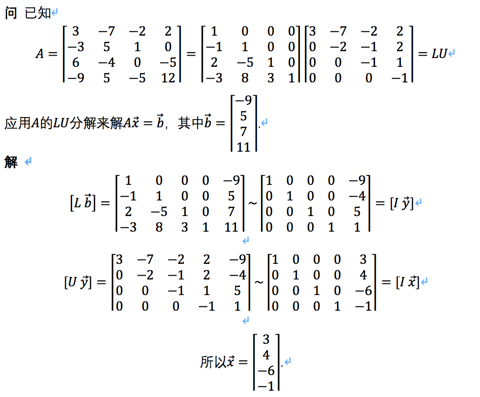
## 2.算法流程 $\quad$算法并不复杂，总的来说为： 1. 矩阵$A$经过一系列初等行变换变成阶梯型矩阵，即$U$; 2. 换过程在每个主元列，把主元以下的元素除以主元即为$L$在该列主元以下的元素。以一个例子来讲解：
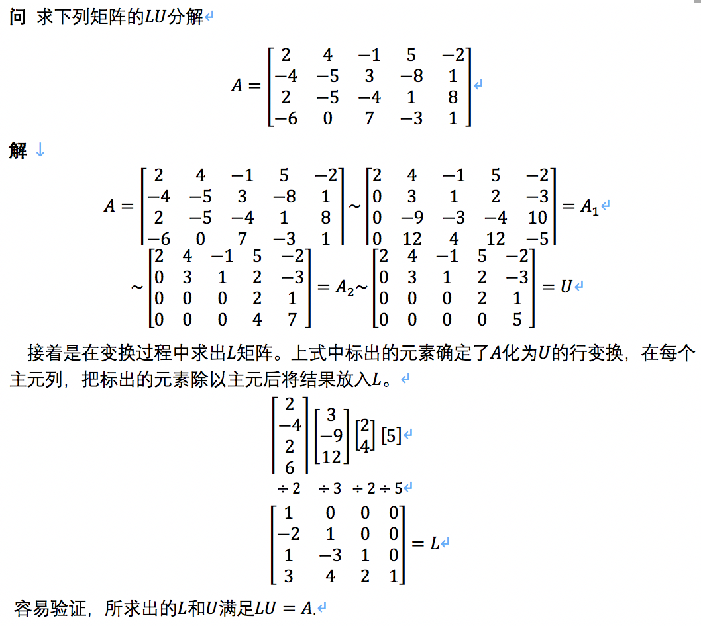
3.算法性能分析#
\(\quad\)下列运算次数的计算适用于\(n\times n\)稠密矩阵\(A\)（大部分元素非零），\(n\)相当大，例如\(n\geq 30\)。
计算\(A\)的\(LU\)分解大约需要\(2n^{3}/3\)浮算，而求\(A^{-1}\)大约需要\(2n^{3}\)浮算。
解\(L\mathbf{y}=\mathbf{b}\)和\(U\mathbf{x}=\mathbf{y}\)大约需要\(2n^{3}\)浮算，因为任意\(n\times n\)三角方程组可以用大约\(n^{3}\)浮算解出。
把\(\mathbf{b}\)乘以\(A^{-1}\)也需要\(2n^{3}\)浮算，但结果可能不如\(L\)和\(U\)得出的精确(由于计算\(A^{-1}\)及\(A^{-1}\mathbf{b}\)的舍入误差)。
若\(A\)是稀疏矩阵（大部分元素为0），则\(L\)和\(U\)可能也是稀疏的，然而\(A^{-1}\)很可能是稠密的，显然用\(LU\)分解来解\(A\mathbf{x}=\mathbf{b}\)很可能比用\(A^{-1}\)快很多。
4.LUP分解#
\(\quad\)考虑下面一个矩阵的\(LU\)分解：
根据之前所述算法，先将矩阵\(A\)化为阶梯形矩阵，并在变换的过程中求出\(L\)。但是很明显，在这种情况下，会出现除数为0的情况，这当然是灾难性的。
\(\quad\)除了除数为0外，还有除数很小的情况，这会产生数值不稳定，因此我们希望尽可能选一个较大的主元。所以有的时候我们必须在矩阵的非对角线元素中选主元。
\(\quad\)我们先引入一个置换矩阵的概念，考虑下面两个矩阵的相乘：
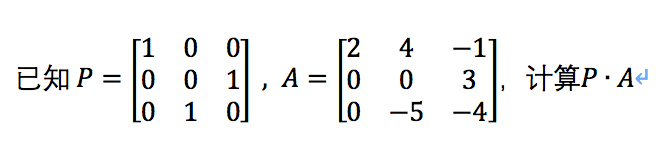
根据我们之前所学知识很容易解出来，求得：
可以发现，矩阵\(A\)似乎没什么变化，只是行的位置改变了而已。我们把这样的矩阵称之为置换矩阵。置换矩阵是一种系数只由0和1组成的方阵。矩阵的每一行/列的第\(i\)个元素为1，表示原矩阵的该行/列为第\(i\)行/列。具体置换的行or列取决于是左乘还是右乘：
当矩阵\(A\)左乘一个置换矩阵，交换的是矩阵的行。即\(P\cdot A\);
当矩阵\(A\)右乘一个置换矩阵，交换的是矩阵的列。即\(A\cdot P\).
\(\quad\)让我们回到\(LUP\)分解。借助这个置换矩阵，我们可以将矩阵\(A\)的行进行置换，每步重新选取较大的主元进行行替换。原来的\(A=LU\)我们改写为\(PA=LU\)，其中\(P\)是一个置换矩阵。该式子表示为先对\(A\)进行行置换，再对行置换后的\(A\)进行\(LU\)分解。
\(\quad\)当我们要求解\(A\mathbf{x}=\mathbf{b}\)，可做如下变换：
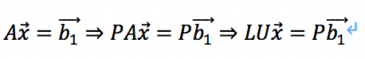
于是问题可以变换为：
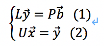
求解到的\(\mathbf{x}\)就是\(A\mathbf{x}=\mathbf{b}\)的解，证明如下：
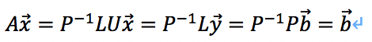
\(\quad\)其实\(LU\)分解是\(LUP\)分解的一种，当\(P=I\)时，\(LUP\)分解就成为\(LU\)分解。可以理解成是\(A\)矩阵不进行置换的情况下\(LUP\)分解就成为了\(LU\)分解。
5.应用#
\(\quad\)利用好矩阵的因式分解，不只是在求解方程组，在求逆矩阵、最小二乘逼近方面也能大大提高效率。目前计算机在计算矩阵的逆都是采用\(LU\)分解。
\(\quad\)在求逆矩阵时，我们可以有两种思路：
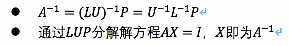
\(\quad\)通过\(LUP\)分解来求逆矩阵的过程中，分解的过程需要\(O(n^{3})\)，求解三角矩阵的过程需要\(O(n^{2})\)，避免了主元素为0的情况。可提高求解一系列具有相同系数矩阵中的线性方程的效率。
\(\quad\)在Python中\(LUP\)分解可以借助scipy直接求解，代码如下：
import numpy as np
from scipy.linalg import lu
if __name__ == '__main__':
a = np.asarray([[2, 4, -1],
[0, 0, 3],
[0, -5, -4]])
p, l, u = lu(a)
print(p)
[[1. 0. 0.]
[0. 0. 1.]
[0. 1. 0.]]
QR分解#
分解要求：矩阵的列线性无关。
1.介绍#
\(\quad\)如果\(m\times n\)矩阵\(A\)的列线性无关，那么\(A\)可以分解为\(A=QR\)，其中\(Q\)是一个\(m\times n\)矩阵，其列形成\(ColA\)的一个标准正交基，\(R\)是一个\(n\times n\)上三角可逆矩阵且在对角线上的元素为正数。\(QR\)分解常用于求解特征值以及最小二乘求解。
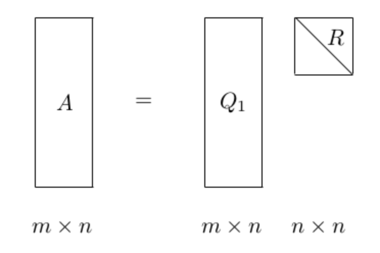
\(\quad\)对\(m\times n\)矩阵\(A\)做\(QR\)分解步骤如下：
对\(A\)的列向量应用格拉姆-施密特方法得到一组正交基，再单位化后得到单位正交基，单位正交基构成矩阵Q的列；
可知\(Q^{T}Q=I\)（正交矩阵的定理），所以有\(Q^{T}A=Q^{T}QR=R\)，因此计算\(Q^{T}A\)即可得到\(R\)。
举一个例子：
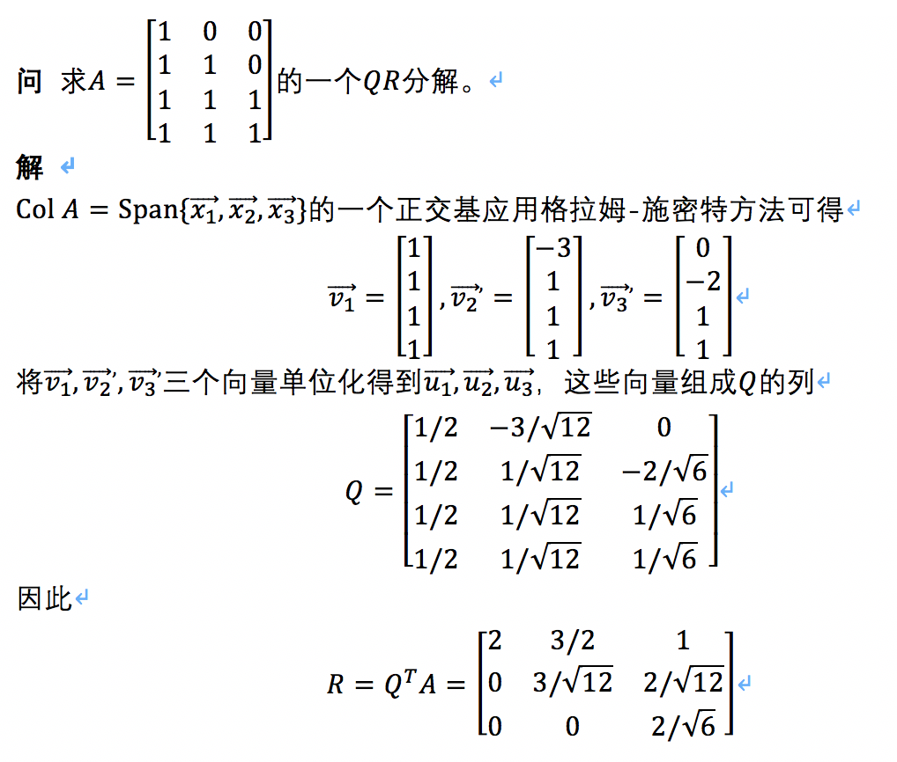
2.QR分解求特征值#
\(\quad\)\(QR\)分解被广泛地用来估计一般矩阵\(A\)的特征值。算法流程如下：
\(A\)被分解为\(Q_{1},R_{1}\)，计算\(R_{1}Q_{1}\)得到\(A_{1}\)；
\(A_{1}\)被分解为\(Q_{2},R_{2}\)，计算\(R_{2}Q_{2}\)得到\(A_{2}\)；
以此类推，计算到第\(k\)次时，\(A_{k}\)几乎是上三角的，且对角线上单元素近似于\(A\)的特征值。
可以简单地证明，\(A\)是相似于\(A_k\)的：
\(\quad\)我们用Python来实现该算法，取k=20或100来对比，\(A= \begin{bmatrix} 2 & 3\\ 3 & -6 \end{bmatrix}\)，代码如下所示：
k=100与k=20相比，通过\(QR\)分解计算出来的矩阵除对角线外元素更趋于0；通过\(QR\)分解计算得到的矩阵对角线上元素均趋于特征值。
奇异值分解#
分解条件：条件最低，任何矩阵都有可能。
1.正交对角化#
\(\quad\)对称矩阵是一个满足\(A^{T}=A\)的矩阵\(A\)。自然地，对称矩阵是一个方阵。
\(\quad\)定理：如果\(A\)是对称矩阵，那么不同特征空间的任意两个特征向量是正交的。（补充：无论是不是对称矩阵，相异的特征值对应的特征向量组成的集合都是线性无关的）证：
\(\quad\)我们知道，对角化是对于一个方阵\(A\)，能找到\(n\)个线性无关的特征向量组成的矩阵\(P\)、特征值组成的对角矩阵\(D\)使得\(A=PDP^{-1}\)。而当\(P\)为正交矩阵，则称上式为正交对角化。我们再引出定理：一个\(n\times n\)矩阵\(A\)可正交对角化的充要条件是\(A\)是对称矩阵。
\(\quad\)证明如下：
\(\quad\)给一个例子：
2.奇异值分解介绍#
\(\quad\)对角化在许多应用中都很重要，但是要对一个矩阵进行对角化，该矩阵必须是方阵。下面将介绍另一种矩阵分解：奇异值分解，该分解对任意\(m\times n\)矩阵\(A\)都有可能，是线性代数应用中最有用的矩阵分解，被用于求矩阵的秩、降维、压缩图像等。
\(\quad\)奇异值分解的形式如下：
其中\(U\)为\(m\times m\)正交矩阵，\(V\)为\(n\times n\)正交矩阵，\(U\)的列称为\(A\)的左奇异向量，\(V\)的列称为\(A\)的右奇异向量；\(\varSigma\)为\(m\times n\)”对角矩阵“，\(D\)为一个\(r\times r\)对角矩阵，\(\sigma_{1},\cdots,\sigma_{r}\)为矩阵的\(r\)个奇异值，形式如下：
3.奇异值分解算法#
\(\quad\)令矩阵\(A\)为\(m\times n\)矩阵，我们希望得到\(A\)的奇异值分解\(A=U\varSigma V^{T}\)，接下来会从这个式子出发，逐步推出\(U,\varSigma,V\)的求解方法以及之间的关系。
3.1结论一#
\(\quad\)我们计算\(A^{T}A,AA^{T}\)有：
形式与对角化是一致，其中而对称矩阵是可以正交对角化的，为此可以下一个结论：\(A^{T}A\)以及\(AA^{T}\)的特征向量规范化（指化为单位正交基）后可构成\(V\)和\(U\)，特征值的非零项开方称之为奇异值，记作\(\sigma_{i}\)，奇异值构成\(\varSigma\)。
3.2结论二#
\(\quad\)令\(\{\mathbf{v}_{1},\cdots,\mathbf{v}_{n}\}\)是\(\Bbb{R}^n\)的单位正交基且构成\(A^{T}A\)的特征向量，\(\lambda_{1},\cdots,\lambda_{n}\)是\(A^{T}A\)对应的特征值，那么我们有:
这里得到两个结论：
奇异值非负；
\(\{\mathbf{v}_{1},\cdots,\mathbf{v}_{n}\}\)为\(A^{T}A\)的特征向量，\(A\)的奇异值是向量\(A\mathbf{v}_{1},\cdots,A\mathbf{v}_{n}\)的长度.
3.3结论三#
\(\quad\)我们对奇异值分解的式子变换如下： $\(AV=U\varSigma\)$ 我们将其展开：
得出结论：
是奇异值、原矩阵、左右奇异向量的关系，在我们通过结论一求出了奇异值、其中一个奇异向量时，可以直接求出另一个奇异向量。通过这些知识我们已经可以对A进行奇异值分解了。
3.4实战#
\(\quad\)例子：
4.奇异值分解应用#
4.1矩阵求秩#
\(\quad\)计算机估计大矩阵\(A\)的秩时，最可靠的方法就是计算非零奇异值的个数（特别小的非零奇异值在实际计算中假定为0），可参考MATLAB的rank源码。
\(\quad\)定理一：假若\(\{\mathbf{v}_{1},\cdots,\mathbf{v}_{n}\}\)是包含\(A^{T}A\)的特征向量的\(\Bbb{R}^{n}\)上的单位正交基，重新整理使得对应的\(A^{T}A\)的特征值满足\(\lambda_{1}\geq\cdots\geq\lambda_{n}\)。假如\(A\)有\(r\)个非零奇异值，那么\(\{A\mathbf{v}_{1},\cdots,A\mathbf{v}_{r}\}\)是\(ColA\)的一个正交基，且\(rankA=r\)。
\(\quad\)定理一说明了，矩阵的奇异值的个数即为矩阵的秩。我们结合结论三得出定理二：
\(\quad\)定理二：给定\(m\times n\)矩阵\(A\)的一个奇异值分解，取\(\mathbf{u}_{1},\cdots,\mathbf{u}_{m}\)是左奇异向量，\(\mathbf{v}_{1},\cdots,\mathbf{v}_{n}\)是右奇异向量，且\(\sigma_{1},\cdots,\sigma_{n}\)是奇异值，\(r\)为\(A\)的秩；\(\{\mathbf{u}_{1},\cdots,\mathbf{u}_{r}\}\)是\(ColA\)的一个单位正交基，\(\{\mathbf{v}_{r+1},\cdots,\mathbf{v}_{n}\}\)是\(NulA\)的一个单位正交基，\(\{\mathbf{v}_{1},\cdots,\mathbf{v}_{r}\}\)是\(RowA\)的一个单位正交基。
\(\quad\)上述的两条定理表明了奇异值个数、列空间、行空间、零空间之间的关系。举一个例子：
4.2图像压缩#
\(\quad\)我们知道一个图像其实就是一个矩阵，矩阵上每个元素都代表着像素。
\(\quad\)假设\(A\)为一个\(m\times n\)矩阵，对\(A\)做奇异值分解有：\(A=U\varSigma V^{T}\)，我们展开计算有：
其中\(\sigma_{i}\)按照从大到小排列，\(\mathbf{u}_{i}\mathbf{v}_{i}^T\)为一个秩一矩阵。我们知道，\(r\)个不同的秩一矩阵相加得到的矩阵秩为\(r\)，可得到两个结论：
\(A\)的奇异值个数为\(A\)的秩；
每个奇异值可看作是一个秩一矩阵的权重。
\(\quad\)奇异值一般数值间差异很大，我们可以取前\(k\)项来近似等于\(A\)从而压缩：
我们读取图片，再对矩阵做奇异值分解，代码如下:
import numpy as np
import cv2
import matplotlib.pyplot as plt
from scipy.linalg import svd
def recover_from_k(U, S, V, k):
return np.dot(np.dot(U[:, :k], np.diag(S[:k])), V[:k, :])
if __name__ == "__main__":
pic = cv2.imread('/Users/lin/study/linear/test.jpg', cv2.IMREAD_GRAYSCALE)
plt.imshow(pic, cmap=plt.cm.gray)
plt.show()
U, S, V = svd(pic)
print(sorted(S, reverse=True))
pic = recover_from_k(U, S, V, 10)
plt.imshow(pic, cmap=plt.cm.gray)
plt.show()
图片大小为250x250，共有250个奇异值，前5个奇异值为：
\(\quad\)原图为：
我们取前10个奇异值还原，如下:
取前20个还原，如下：
取前50个还原，可以看出已经非常接近原图了：
\(\quad\)原图为250x250，总共有62500个元素。我们取前50个奇异值还原，\(\mathbf{u}_{1}\)和\(\mathbf{v}_{1}^T\)均包含250个元素，总共需要50*(250+250+1)=25050个元素，成功达到压缩目地。